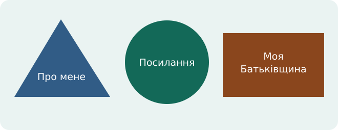

ЛАБОРАТОРНА РОБОТА №6 · ГРЕБЕНЮК ІВАН · 305-ТН
Навігація за геометричними фігурами
Виберіть одну з трьох фігур. Кожна відкриває окрему HTML-сторінку.

ЛАБОРАТОРНА РОБОТА №6 · ГРЕБЕНЮК ІВАН · 305-ТН
Виберіть одну з трьох фігур. Кожна відкриває окрему HTML-сторінку.
